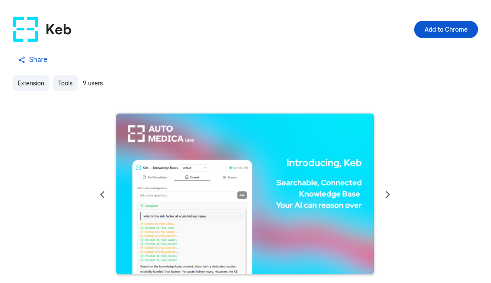
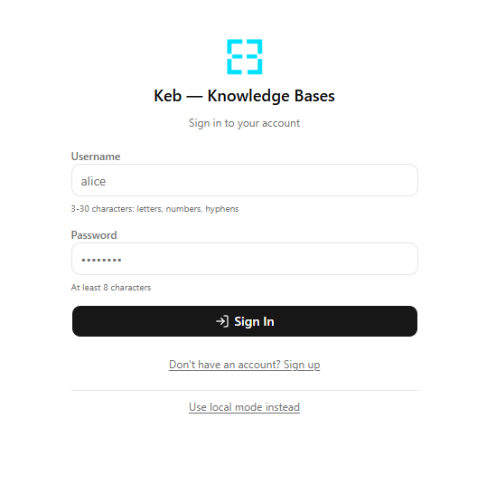
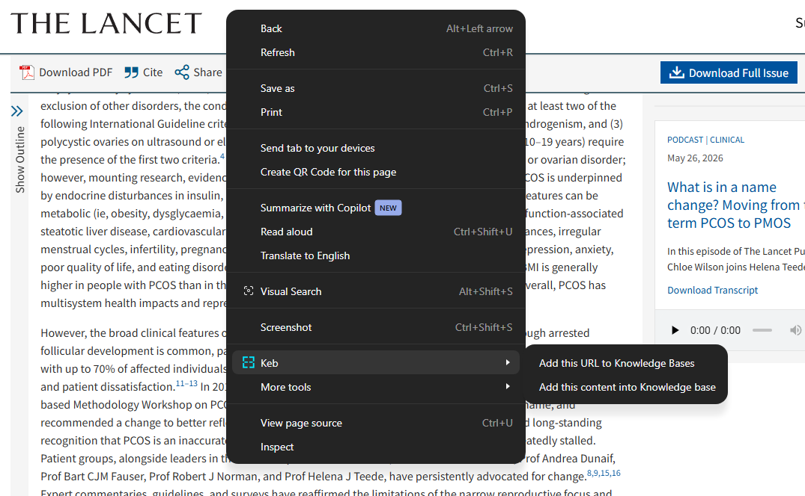
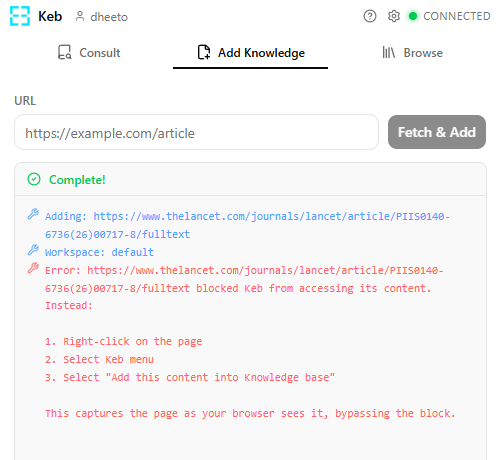
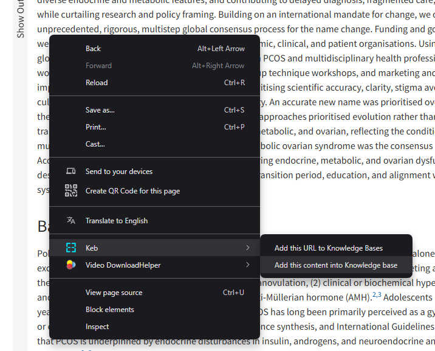

How to Use Keb
Get started in under two minutes. Install the extension, create an account, and start building your personal knowledge base from any web page.
Install the Extension
Head to the Chrome Web Store and click Add to Chrome. Keb works in Chrome, Edge, Brave, Arc, and any Chromium-based browser.

Open the Extension & Register
Click the Keb icon in your browser toolbar to open the side panel. You'll be prompted to sign in or create an account with a username and password — no email required. You can also switch to Local mode to keep everything on your machine.

Add Pages to Your Knowledge Base
On any web page, right-click and choose "Add this URL to Knowledge Bases" to process the page, or "Add this content into Knowledge base" to capture the full page text. Keb's AI agent will compile summaries and extract concepts automatically. You can also paste URLs directly in the side panel.

Common Issues
"Add this URL" doesn't work on some pages
Some websites block automated fetching of their content. When this happens, you'll see an error like this in the side panel:

Fix: Instead, right-click on the page and choose "Add this content into Knowledge base". This captures the full page content directly from your browser — no fetching needed.
